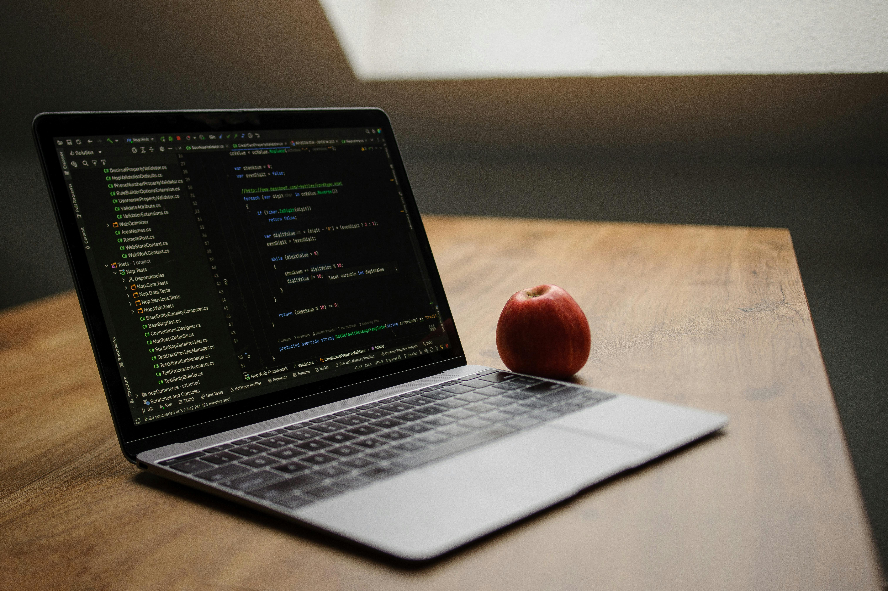

Je suis un étudiant belge de 22 ans, écartelé entre deux mondes fascinants : les lignes de code informatique (mes études) et les bilans financiers des plus grandes entreprises mondiales. Ce site est le fruit de cette double passion.
🏔️ 2022 : L'objectif Ski, les Dividendes et la dure réalité
Tout a commencé en 2022. J'avais 18 ans, j'étais étudiant, et j'avais un rêve très concret : gagner assez d'argent par moi-même pour me payer un séjour au ski avec mes amis. Je savais que mon job étudiant ne suffirait pas, alors je me suis tourné vers la Bourse. Candide et rassuré par les discours ambiants, j'ai investi mes premiers euros dans des actions à dividendes "classiques". Mon plan ? Toucher ce fameux "revenu passif" pour financer mes vacances.

Mais la réalité m'a vite rattrapé. J'ai compris que pour un petit portefeuille étudiant, attendre quelques centimes de dividendes par mois était une stratégie trop lente pour mon objectif. Pire encore, je me suis laissé emporter par le bruit du marché, cherchant la performance rapide, la spéculation, les rumeurs. J'ai gagné, j'ai perdu, mais j'ai surtout réalisé une chose : spéculer est un stress permanent, et ce n'était pas de l'investissement. C'était du hasard.
💎 2023 : La quête de performance et la révélation "Quality"
En 2023, ma motivation a changé. Je ne voulais plus seulement payer un voyage au ski, je voulais gagner plus d'argent, avoir de vraies performances et voir mon capital croître significativement. J'ai compris que pour un petit capital, la croissance était le moteur le plus puissant. C'est en dévorant les écrits de Warren Buffett, Terry Smith et François Rochon que j'ai eu ma révélation : le Quality Investing.
J'ai arrêté de chercher "le bon coup" pour me concentrer exclusivement sur "les entreprises merveilleuses". J'ai troqué mes actions à dividendes anémiques contre des sociétés possédant un Moat (avantage concurrentiel) infranchissable, des marges insolentes, une dette maîtrisée et un ROIC (retour sur capital investi) exceptionnel. Depuis ce jour, je ne traque plus les prix bas, je traque l'excellence. Cette stratégie a tout changé : mes performances ont décollé, mais surtout, ma sérénité est devenue totale.
Mon dogme : L'Hyper-Concentration 🎯
La diversification à outrance est souvent la béquille de l'ignorance. Si vous passez des dizaines d'heures à analyser une entreprise et que vous êtes convaincu qu'elle est parmi les 10 meilleures au monde, pourquoi iriez-vous diluer votre argent dans votre 40ème meilleure idée ? Je suis un fervent défenseur de l'hyper-concentration. Je préfère détenir une poignée d'entreprises merveilleuses que je connais par cœur, plutôt qu'un ETF indiciel rempli de sociétés médiocres. C'est en concentrant mes investissements que j'ai obtenu mes meilleures performances.
💻 La Naissance de StocksPickeur : Codé par passion, pour démocratiser
Enfant du numérique, j'ai vite réalisé que les outils professionnels pour pratiquer le Quality Investing étaient soit hors de prix, soit illisibles, soit inexistants. C'est ici que ma double casquette prend tout son sens. Je suis un véritable passionné d'informatique et de développement. Étudiant dans ce domaine, j'ai décidé de prendre le problème à bras le corps.
Tout le site StocksPickeur, chaque calculateur, chaque base de données, chaque ligne de code de cette plateforme a été écrite et pensée par mes propres mains. J'ai fusionné ma rigueur technique de développeur avec ma rationalité d'investisseur pour créer la plateforme que j'aurais voulu avoir à mes débuts.
Au-delà de mes propres besoins, une mission plus grande m'animait depuis le début : démocratiser l'investissement sérieux auprès de mes proches. Je voulais casser cette croyance populaire, malheureusement trop ancrée dans la génération de nos parents, que la Bourse est un casino, une loterie ou un monde réservé aux requins de la finance.
Je veux prouver qu'avec de la méthode, de la patience, et les bons outils, n'importe qui peut s'enrichir intelligemment en devenant propriétaire de business extraordinaires. C'est ce combat contre l'ignorance financière et pour l'hyper-concentration de qualité que je mène aujourd'hui sur Internet à travers StocksPickeur. Ma méthode est transparente, mes outils sont puissants, et ils sont désormais à votre disposition.
L'enrichissement boursier n'est pas un sprint spéculatif, c'est un marathon d'entreprise.
Enfilez vos baskets, on est partis. 🚀